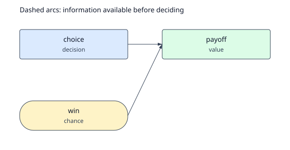
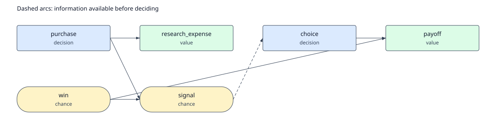

A worked decision, from assumptions to action
Should we settle—or pay to learn more?
Start with a $400,000 settlement offer. Find what would change your answer, work out whether research is worth buying, and keep a record someone else can inspect.
01 · Frame the decision
A choice, an uncertainty, and a cost.
You are helping a defendant decide whether to settle or litigate. Settlement costs $400,000. Going to trial always costs $150,000 in legal fees. A win avoids damages; a loss adds $1.2 million. The current estimate of the chance of winning is 60%.
A certain cost. No trial.
Legal fees, with no damages.
Legal fees plus damages.
The immediate question is which action has the lower expected cost. The more useful questions follow: How wrong could the win estimate be before the answer changes? Could a study change the choice enough to justify its cost?
All numbers are named assumptions, owned by raiffa_example_author. We assume risk neutrality, one valuation date, and a settlement offer that stays available during research. There are no real expert responses or forecast records behind this example.

02 · Get ready
Install the checkout you are using.
Use Python 3.11 or newer on macOS or Linux. From the Raiffa repository root, create an environment and install this local version. This makes the tutorial usable even before the current changes are published.
python3 -m venv .venv
. .venv/bin/activate
python -m pip install -e .
raiffa version
raiffa guideCheck that raiffa version reports 0.2.0 or a compatible newer version. If the CLI is already installed, skip installation. This tutorial does not need EDSL, credentials, or paid execution.
Run the remaining command blocks in order, in the same terminal. They create a new lawsuit/ directory and keep the analysis IDs in shell variables. Use a fresh parent directory if lawsuit/ already exists.
Prefer to work through a coding agent?
Give the agent this prompt. Keep the walkthrough open to inspect its decisions.
Use this local Raiffa checkout to work through the synthetic LEG-01 tutorial.
Install the package, run raiffa guide, and use raiffa next after each stage.
Use the bundled model example; preserve its named-assumption provenance.
Explain the settlement decision, the win-probability threshold, and the value
of the declared study. Then evaluate the sequential study-purchase model.
Save the decision memo. Change the base win probability to 0.85 in a new
revision, compare the analyses, and replay the old result.
Keep all work local. Do not invent evidence or mark the recommendation as
an approved human decision.03 · Record the model
Make the assumptions inspectable.
The example ships with the package, so you do not need to find or edit a file inside its installation directory. Export a working copy, import it into a project, and check its structure and provenance.
raiffa init lawsuit
cd lawsuit
raiffa model example --output model.json
raiffa model import --file model.json
raiffa model validate leg01 --strict
raiffa next leg01Validation returns valid: true. next reports the evaluate phase and recommends solve leg01. Named assumptions remain visible as warnings; validation does not turn them into empirical evidence.
Open model.json. The win probability is a parameter, not an unexplained number embedded in a branch:
{
"id": "p_win",
"kind": "probability",
"unit": "1",
"value": 0.6,
"bounds": [0, 1],
"provenance": {
"source_type": "assumption",
"source_refs": [],
"owner": "raiffa_example_author",
"rationale": "Synthetic probability of defendant winning; no empirical claim.",
"evidence_population": "not_applicable",
"review_status": "accepted"
}
}The losing probability is derived as 1 - p_win. Moving the win probability therefore updates the complementary branch too. bounds tells the agent workflow which sensitivity range to check.
04 · Choose an immediate action
Settlement wins on expected cost.
Settlement costs $400,000, so it has a $230,000 expected-cost advantage. Raiffa maximizes payoff: costs appear as negative values. −$400,000 is preferable to −$630,000.
raiffa solve leg01 > solve-base.json
BASE_ANALYSIS=$(python3 -c 'import json; print(json.load(open("solve-base.json"))["data"]["analysis_id"])')
python3 -c 'import json; d=json.load(open("solve-base.json"))["data"]; print(d["recommended_action"], d["expected_value"])'
raiffa risk leg01 > risk-base.json
raiffa dominance leg01settle -400000.0. First-order stochastic dominance reports no relations: litigation is better if you win and worse if you lose. A higher expected payoff is not the same as dominance.
| Action | Payoff | Probability |
|---|---|---|
| Settle | −$400,000 | 100% |
| Litigate, win | −$150,000 | 60% |
| Litigate, lose | −$1,350,000 | 40% |
The JSON file contains the full policy, risk profiles, assumptions, and a frozen analysis ID. Saving this response lets us report and compare that exact analysis later.
05 · Find the tipping point
What would change the recommendation?
The useful conclusion is conditional: settle unless the win probability exceeds 79.17%, holding the other inputs fixed. At the boundary the actions tie. Alternatively, holding the win probability at 60%, litigation becomes preferable if damages fall below $625,000.
raiffa sensitivity one-way leg01 --param p_win --from 0 --to 1 > win-threshold.json
raiffa sensitivity one-way leg01 --param damages --from 1 --to 2000000 > damages-threshold.json
python3 -c 'import json; d=json.load(open("win-threshold.json"))["data"]; print(d["thresholds"][0]["value"])'0.7916666666666666, or exactly 19/24 before floating-point representation. Raiffa finds the intersection of the competing affine policy values rather than returning a coarse sweep interval.
Try a different belief.
This browser preview uses the same binary expected-cost formula. It does not edit your project or save an analysis.
Settle has the lower expected cost.
Trial expected cost: $630,000.
Expected cost advantage: $230,000. This is not a guaranteed outcome.
At these damages, the win-probability threshold is 79.17%.
Try 85% while leaving damages at $1.2 million. Then reset and lower damages. If both inputs change, use the joint condition legal_cost + (1 - p_win) × damages = settlement. Separate one-way thresholds cannot simply be joined with “or” when their held-fixed assumptions no longer apply.
06 · Price better information
Useful research changes what you do.
First ask an idealized question: what if you could know the trial outcome before choosing? You would litigate when a win was certain and settle when a loss was certain. That policy has expected cost $250,000, improving on settlement by $150,000.
This perfect-information value is an upper bound for comparable information—not a claim that a real study can reveal a future trial result.
raiffa voi perfect leg01 --targets win > perfect-information.json
raiffa voi sample leg01 --study case_review > study-value.json
raiffa research agenda leg01 > research-agenda.json
python3 -c 'import json; d=json.load(open("study-value.json"))["data"]; print("Gross:", d["gross_value"], "Net:", d["net_value"])'The bundled case_review is a synthetic study with an explicit observation model. It costs $10,000 and produces a favorable or unfavorable signal before the decision:
| Quantity | Value | Meaning |
|---|---|---|
| P(favorable | win) | 80% | Assumed study sensitivity. |
| P(favorable | lose) | 20% | Assumed false-favorable rate. |
| P(favorable) | 56% | 0.60 × 0.80 + 0.40 × 0.20. |
| P(win | favorable) | 85.71% | Above the 79.17% threshold: litigate. |
| P(win | unfavorable) | 27.27% | Below the threshold: settle. |
Gross: 44000.0 Net: 34000.0. The informed policy costs $356,000 on average before research expense, or $366,000 including it. Its net improvement over settling now is $34,000.
The information value depends on the likelihoods, cost, observation timing, and available actions. Raiffa cannot price a real Delphi or survey just from its label. Independent study rankings also do not establish the best combination of overlapping studies.
07 · Research, then decide
Make “wait and learn” an actual choice.
The second fixture puts the study purchase inside the model. First choose act_now or study. Then observe either no signal or the study result. Finally, choose settlement or litigation.
- Purchase research?
- Observe its signal
- Settle or litigate
- Receive the payoff
raiffa model example --sequential --output sequential.json
raiffa model import --file sequential.json
raiffa solve leg01_sequential > solve-sequential.json
raiffa model compile leg01_sequential --output sequential-tree.json
python3 -c 'import json; d=json.load(open("solve-sequential.json"))["data"]; print(d["recommended_action"], d["expected_value"])'study -366000.0. Buy the study; litigate after a favorable signal and settle after an unfavorable one. The study cost is included in the payoff.

The compiled tree includes possible histories, including hidden outcomes. Decisions at indistinguishable histories must use the same action. That constraint prevents a solver from “winning” by pretending to know the future.
This example has no waiting cost or offer expiry. Real delay decisions need those economics recorded in a supported model. Merely placing an observation before a decision does not make waiting free in the real world.
08 · Save the recommendation
Deliver a result someone can inspect.
Return to the base model. Its saved analysis provides the immediate settle/litigate recommendation; the associated challenge analyses explain when it changes and whether to buy the study. Create a memo from those frozen results.
raiffa next leg01
raiffa report "$BASE_ANALYSIS" --output decision-memo.html
raiffa handoff "$BASE_ANALYSIS" --target vorhersage --output monitoring.json
raiffa analysis replay "$BASE_ANALYSIS"
raiffa doctor
raiffa next leg01Replay returns identical: true; doctor returns valid: true; the final next leg01 reports complete. Open decision-memo.html in your browser.
The memo includes diagrams, the policy, payoff CDFs, switching conditions, information values, and the parameter provenance inventory. The optional monitoring.json contains the recommendation and thresholds as a proposed local handoff.
Writing that handoff does not modify Vorhersage or mean it already supports this import format. Likewise, a computed recommendation is not a recorded approval by the decision owner.
What does “complete” mean?
For the selected finite workflow: a valid current model, accepted provenance or disclosed assumptions, a current solve, sensitivity over declared parameter bounds, an agenda for declared studies, and a current HTML memo. It is not a certification that every uncertainty has been researched or that every capability in the long-term spec exists.
09 · Explain a changed belief
A recommendation should have a history.
Suppose the win probability changes from 60% to 85%. In this exercise it is another synthetic assumption, not a newly collected forecast. Make a revised input file and change its rationale; leave the old model and analysis intact.
python3 - <<'PY'
import json
from pathlib import Path
model = json.loads(Path("model.json").read_text())
parameter = next(p for p in model["parameters"] if p["id"] == "p_win")
parameter["value"] = 0.85
parameter["provenance"]["rationale"] = "Synthetic revised belief for the tutorial: 85% win probability."
Path("revised-model.json").write_text(json.dumps(model, indent=2) + "\n")
PY
raiffa model revise leg01 --file revised-model.json --reason "Explore an 85% win belief"
raiffa next leg01
raiffa solve leg01 > solve-revised.json
REVISED_ANALYSIS=$(python3 -c 'import json; print(json.load(open("solve-revised.json"))["data"]["analysis_id"])')
raiffa analysis compare "$BASE_ANALYSIS" "$REVISED_ANALYSIS" > recommendation-change.json
raiffa analysis replay "$BASE_ANALYSIS"
python3 -c 'import json; d=json.load(open("solve-revised.json"))["data"]; print(d["recommended_action"], d["expected_value"])'The no-study recommendation flips to litigate, with expected payoff approximately -330000.0. The comparison attributes the flip to p_win in a counterfactual re-solve. Replaying the old analysis still returns the original settlement result.
Acceptance of the new revision resets the relevant workflow gates. The base memo is still an honest record of the old analysis; it is not the current recommendation. Finish the new revision’s checks and write a separate memo:
raiffa sensitivity one-way leg01 --param p_win --from 0 --to 1 > revised-threshold.json
raiffa research agenda leg01 > revised-research.json
raiffa report "$REVISED_ANALYSIS" --output revised-decision-memo.html
raiffa next leg01 > final-state.json
raiffa doctorFor several simultaneous changes, read the comparison as one-at-a-time substitutions into the old model. Interactions and structural changes may prevent any single parameter from explaining the flip.
10 · Move from the example to your decision
Start with the smallest model that could change your mind.
- Name the decision and its owner. Record feasible actions, the decision date, and what the payoff means from that owner’s perspective.
- Separate an outcome from an observation. What can happen is not necessarily what you will know before acting.
- Source each number. Use a frozen evidence artifact and a record locator, or an explicit assumption with an owner and rationale. Do not replace an assumption tag with a fictitious study ID.
- Keep money and preferences consistent. This release uses a single valuation date and risk-neutral scalar payoffs. Do not silently substitute it for a risk-averse or multiattribute decision.
- Declare useful ranges and study models. Look for conditions that reverse the policy. A proposed study needs likelihoods, timing, and costs before its information value can be evaluated.
- Use the control loop. Run
raiffa next MODEL_IDafter a change. Preserve prior analyses and use the recommended action for the current revision.
The fixture is a starting point, not a template that fits every problem. If an important feature cannot be represented within the implemented scope, record that limitation rather than force it into misleading branches.
Reference · v0.2.0
What is available today?
| Implemented | Outside this release |
|---|---|
| Finite influence diagrams, information-aware policies, exact enumeration within explicit budgets. | Continuous Monte Carlo and large-model optimization. |
| Typed provenance, frozen source bytes, immutable revisions and replay. | Native adapters that authenticate or interpret sibling-package records. |
| Risk-neutral scalar payoffs, finite risk profiles, first-order dominance. | Nonlinear utility and multiattribute preferences. |
| Affine one-way thresholds, finite perfect information and study EVSI. | General nonlinear, two-way, or probabilistic sensitivity. |
| Local HTML/SVG/JSON reports and proposed handoff files. | EDSL instrument generation, external execution, or automatic forecast updates. |
Command conventions and common mistakes
- JSON is the default. Save machine-readable responses without
--human; application data is insidedata. - When working outside a project, put the global flag first:
raiffa --project lawsuit solve leg01. - Model IDs are explicit:
solve leg01, not baresolve. - After importing both examples, use
next leg01ornext leg01_sequentialto select the intended model. - Do not edit files inside
.raiffa/. Revise an exported input and usemodel revise. solve --exploratorydoes not satisfy the normal workflow’s completion gate.- If shell variables were lost in a new terminal, recover IDs from the saved response files using the extraction commands above.
For the packaged reference, run raiffa docs show finite-models. The implementation notes spell out solver budgets and storage behavior. The successor specification also contains future design; it is not a list of available commands.